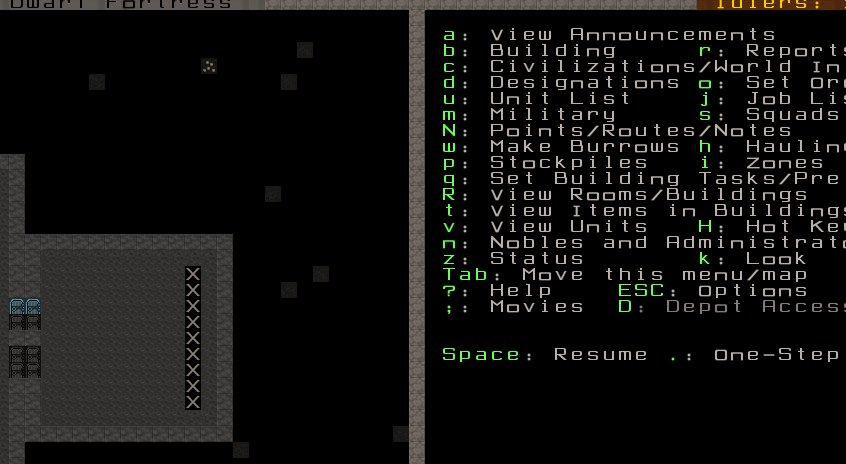
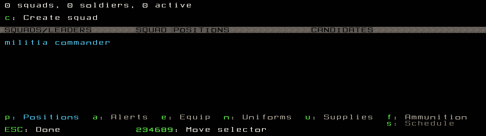
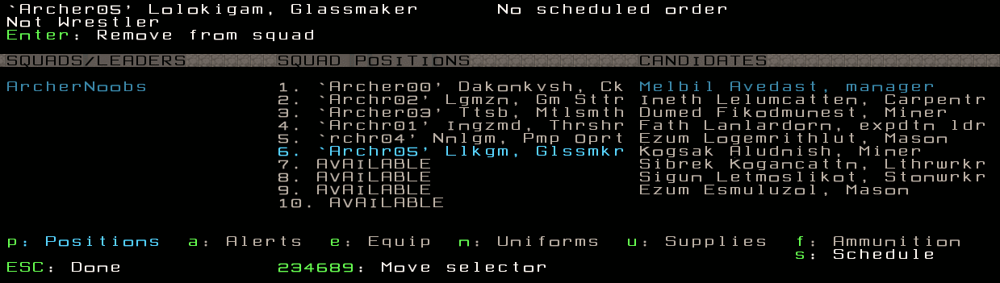
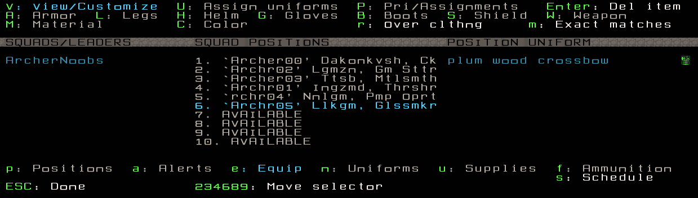
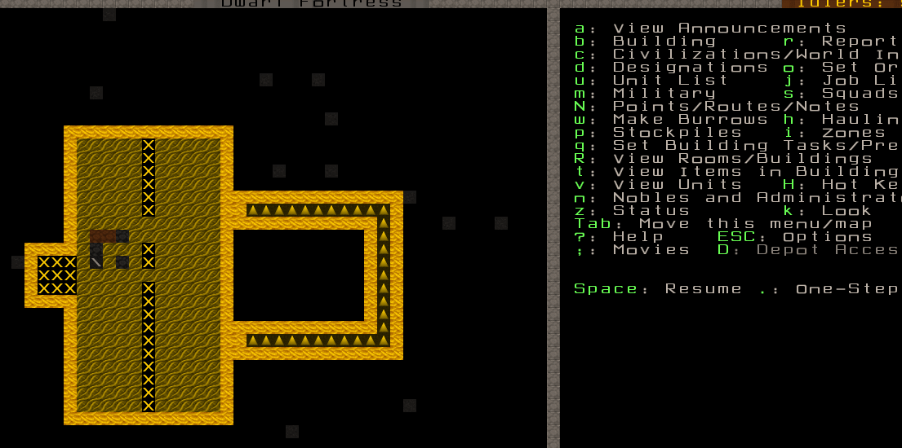
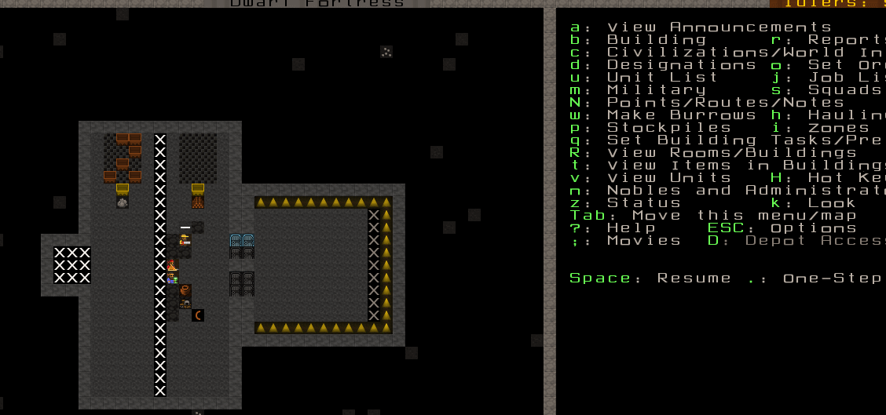
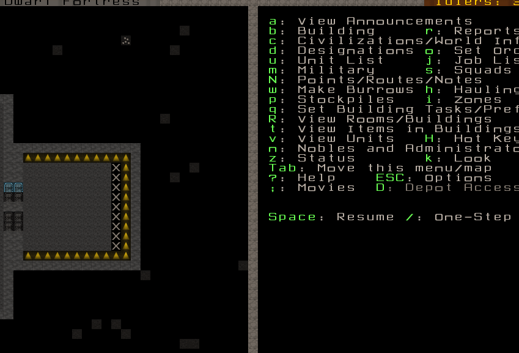
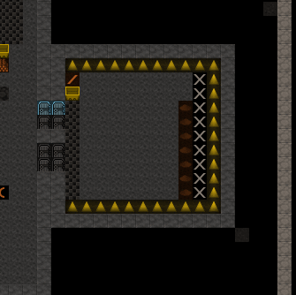

Training Archers¶
Source: Mechanixm’s Guide to Better Stockpiling: Part 1 - Intro to Quantum Stockpiling Mechanixm’s Guide to Better Stockpiling: Part 2 - The Five Primary Stockpiles Mechanixm’s Guide to Better Stockpiling: Part 3 - Useful Custom Stockpiles

I’ve had several requests to create a guide as to how I set up the Archery Training Room of Highsteppes. I’ll go through the core steps to train crossbow dwarves. I assume you have some DF experience, so I won’t tell you literally everything.
Building the training room¶
Dig out a simple 11x11 room and seal it off with doors. There is
nothing special about this… it’s just a room. Then build the targets
(b, A) in a vertical line, one space from the walls.
The material of the blocks used has no effect on anything. Dwarves with Masonry enabled will come and build the targets.
Dig a channel next to the walls, to save any bolts that miss a target.
This way, if a bolt flies and hits the north or south wall, it will be saved - bolts that are fired from one z-level and land on another are not destroyed when they hit the ground. Reclaiming ammunition like this is more useful for combat (ie metal) bolts, so this is just to demonstrate the technique.
q, r each target and set its room size. Yes, you have
to do this for each of them.
If you’re not planning to shoot from left to right, press
w/a/s/d to change the firing direction.
Creating the squad¶
In my example, I haven’t created any squads yet. I assign them No Uniforms because I literally have no armor in this fortress. Rename your squad if you wish. Assign all of your Crossbow dwarves to the squad.
If you have uniforms created that contain crossbows, you should be able to just assign your guys that uniform. Otherwise, manually assign a crossbow to each dwarf as the example shows.
 Highlight the squad name and press c to add a new item.
Add Wood Bolts and Bone Bolts and set the amounts to 600 of each.
I’ve never had an issues with ammo when setting 100 bolts per
dwarf. The bolts are set for both Combat and Training.
When you graduate your dwarves out of a Training Squad to a Legit Crossbow squad, only use metal ammo. Crappy materials are for training.
You’ll need some other supplies - waterskins, quivers, and backpacks.
Quivers are mandatory - marksdwarves won’t train if they can’t carry ammo! Waterskins or flasks are optional, but your military dwarves need them to carry booze and thus avoid drink breaks. Backpacks are used to carry food with them, so they don’t need a dining room to eat.
Make some crossbows and wooden bolts. I hardly ever ever ever use wooden crossbows, but use whatever you want.
I have 6 dwarves in this Training Squad, so I’m going to create
minimum training orders. I then delete that unnecessary Train 10
minimum order by pressing Tab, x.
Press Tab to get back up to the schedule grid where
it says Train for each Month. On the month I created
the 6 Train 1 Soldier minimum orders, I press c to copy,
then p paste those orders for each month of
the year. Sleep in room and uniformed inactive
stay at default settings.
Finally, s for squads, a to choose my squad, t
to set active.
Assign your squad to the Archery Training Room.¶
Yes. You need to do this for the room set from every target, individually.
Press q and highlight an Archery Target Training Room,
highlight your squad and press t. My squad is already highlighted
because I only have one squad right now. Set your squad to train
for each target… and let the training begin!
If you’ve done everything correctly, the dwarves will come in and shoot. Once they are done, they will go on break. It is not unusual for your dwarves to shoot an entire quiver while training and then just sort of hang around for a month.
Instead, you can give the squad a Kill command to go kill some helpless animal. After they kill it, they should go right back to the training to train some more. Be patient, and your dwarves will continue to train. They just like to take breaks after emptying each quiver.
You’ll need to create an ammunition stockpile in the room. DO NOT try to store ammunition in bins; it’s very buggy. Use a quantum stockpile or learn to live with it.
Reclaim ammo from the channel with d, b, c
and select the items to recover.
Your dwarves will grab the bolts and bring it over to your ammo stockpile. In my case, it gets quantum stockpiled which allows for easy grabbing when refilling quivers. Here is a gif showing ammo reclamation during training. Notice how no one gets hit in the crossfire. That is normal:
Slowly but surely their skills will rise.
Thanks for taking the time to read. A complete list of my other guides can be found here. If you have any questions or comments, please let me know. -Mech